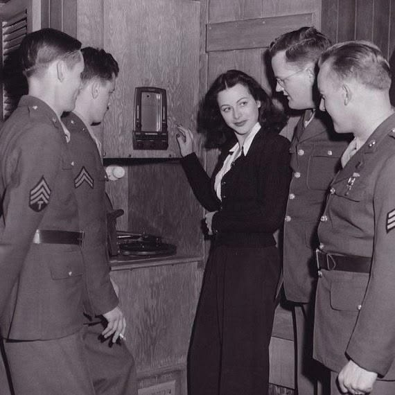

Quem foi Hedy Lamarr?
Hedy Lamarr foi uma atriz e inventora austríaca-americana que marcou a história tanto do cinema quanto da tecnologia. Nascida como Hedwig Eva Maria Kiesler, em 9 de novembro de 1914, em Viena, na Áustria, tornou-se uma das estrelas de Hollywood durante a chamada Era de Ouro do cinema. Entretanto, por trás de sua imagem de atriz, havia uma mulher curiosa e inventiva, interessada em compreender o funcionamento das coisas e desenvolver soluções para problemas tecnológicos. Sua trajetória demonstra como a criatividade e o conhecimento podem ultrapassar os limites de uma única área de atuação.
Ver mais
Vida pessoal e primeiros interesses
Desde a infância, Hedy demonstrava curiosidade pelo funcionamento de máquinas e mecanismos. Seu pai, Emil Kiesler, incentivava esse interesse ao explicar como diferentes dispositivos funcionavam, enquanto sua mãe, Gertrud Kiesler, pianista, estimulava sua formação artística. Essa combinação entre curiosidade técnica e contato com as artes contribuiu para a diversidade de seus interesses. Na juventude, Hedy começou a estudar teatro e a trabalhar no cinema europeu. Em 1933, ganhou notoriedade com o filme Ecstasy. Posteriormente, casou-se com Fritz Mandl, um empresário austríaco ligado à indústria de armamentos. O casamento foi marcado por restrições à sua liberdade pessoal e profissional. Em 1937, ela deixou o marido e a Europa, seguindo para os Estados Unidos, onde iniciou uma nova etapa de sua vida.
Carreira artística em Hollywood
Ao chegar aos Estados Unidos, Hedy passou a trabalhar com a Metro-Goldwyn-Mayer (MGM), um dos grandes estúdios cinematográficos da época. Foi nesse período que adotou o nome artístico Hedy Lamarr e conquistou reconhecimento internacional por sua atuação e beleza. Entre seus filmes mais conhecidos estão Algiers (1938), Ziegfeld Girl (1941) e Samson and Delilah (1949). Apesar do sucesso, sua imagem pública esteve frequentemente associada à aparência física, enquanto seus interesses intelectuais e suas atividades como inventora receberam menos atenção. Fora das filmagens, Lamarr dedicava parte de seu tempo a desenvolver ideias e experimentar soluções para diferentes problemas. Sua história tornou-se um exemplo de como estereótipos podem contribuir para que as capacidades científicas e inventivas das mulheres sejam subestimadas.
A pesquisa durante a Segunda Guerra Mundial
Com o início da Segunda Guerra Mundial, em 1939, Hedy desejava contribuir para o esforço dos Aliados. Sua experiência pessoal na Europa e seu contato anterior com o ambiente da indústria de armamentos despertaram seu interesse em encontrar uma maneira de tornar mais segura a comunicação utilizada no controle remoto de torpedos. Em 1940, conheceu o compositor e inventor George Antheil. A partir dessa colaboração, surgiu a proposta de um sistema de comunicação baseado no frequency hopping (salto de frequência), uma técnica que consiste em mudar a frequência de transmissão de um sinal de rádio de maneira coordenada entre o transmissor e o receptor. A intenção era dificultar que as forças inimigas interceptassem ou bloqueassem o sinal responsável por orientar um torpedo. Para isso, os dois desenvolveram um método em que a transmissão e a recepção alternariam entre diferentes frequências seguindo uma sequência sincronizada, tornando mais difícil interromper a comunicação ao interferir em apenas um canal. A proposta foi patenteada em 1942, sob o nome Secret Communication System.
Ideia do projeto
O projeto tem como objetivo criar um simulador de frequência, inspirado na invenção de Hedy Lamarr. O simulador permite que os usuários explorem o conceito de salto de frequência, proporcionando uma experiência interativa e educativa. Através do simulador, os usuários podem compreender melhor como a tecnologia de salto de frequência funciona e sua importância na comunicação moderna.